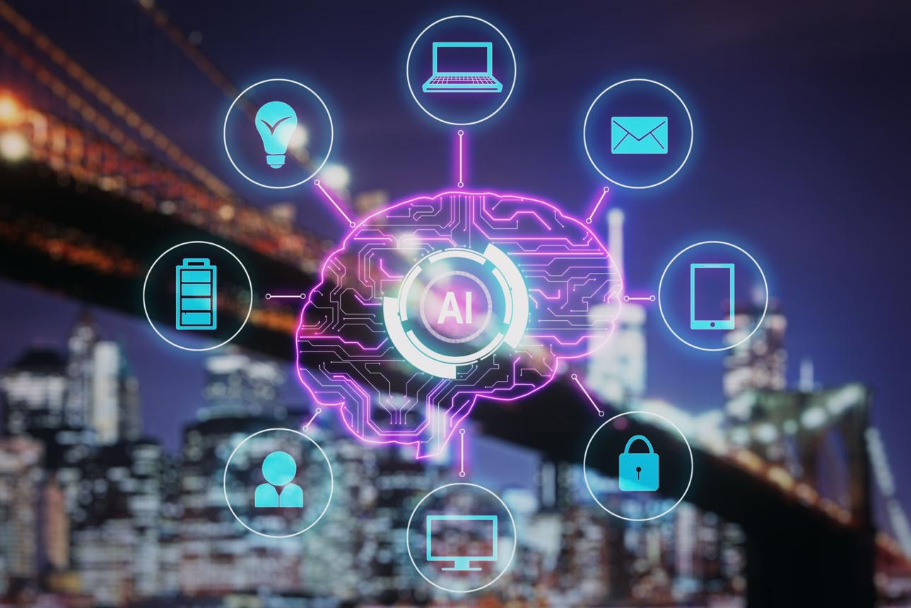
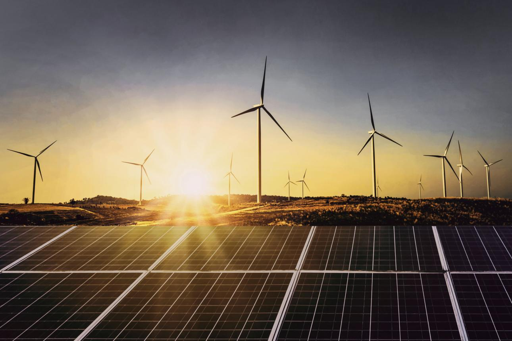

The Future of Artificial Intelligence

Artificial Intelligence (AI) is transforming the way we live and work. From voice assistants to self-driving cars, AI systems are becoming more intelligent and efficient. Businesses use AI for automation, data analysis, and decision-making, reducing human effort and increasing productivity. In the future, AI is expected to revolutionize healthcare, education, and transportation. However, ethical concerns like privacy and job displacement must also be addressed. AI is not just a trend—it is shaping the future of humanity.
Importance of Clean Energy

Clean energy is essential for a sustainable future. Sources like solar, wind, and hydroelectric power reduce pollution and dependence on fossil fuels. These renewable sources help combat climate change and protect the environment. Governments and organizations worldwide are investing in green technologies to ensure a cleaner planet. By adopting clean energy, individuals can also contribute by using solar panels or reducing electricity waste. A shift toward renewable energy is necessary for long-term survival.
Benefits of Regular Exercise
Regular exercise is vital for maintaining both physical and mental health. It helps in improving cardiovascular fitness, strengthening muscles, and boosting immunity. Exercise also reduces stress, anxiety, and depression by releasing endorphins. Activities like walking, jogging, yoga, or gym workouts can make a significant difference. Maintaining a consistent fitness routine leads to a healthier and longer life. Even 30 minutes of daily activity can bring positive changes.
The Impact of Social Media
Social media has changed how people communicate and share information. Platforms allow instant connection across the globe, making communication faster and easier. It is also a powerful tool for marketing, education, and awareness. However, excessive use can lead to addiction, reduced productivity, and mental health issues. It is important to use social media responsibly and maintain a balance between online and offline life.
Technology in Education
Technology has greatly enhanced the education system. Online learning platforms, virtual classrooms, and digital tools have made education more accessible. Students can now learn from anywhere at any time. Interactive tools and multimedia content improve understanding and engagement. Teachers can track student performance more effectively. Technology is bridging the gap between traditional and modern learning methods, making education more efficient and inclusive.